Coordination Compounds
We know that transition metals form a large number of complex compounds in which the metal atoms are bound to a number of anions or neutral molecules by sharing of electrons. In modern terminology such compounds are called coordination compounds. The chemistry of coordination compounds is an important and challenging area of modern inorganic chemistry. New concepts of chemical bonding and molecular structure have provided insights into the functioning of these compounds as vital components of biological systems. Chlorophyll, haemoglobin and vitamin B12 are coordination compounds of magnesium, iron and cobalt respectively. Variety of metallurgical processes, industrial catalysts and analytical reagents involve the use of coordination compounds. Coordination compounds also find many applications in electroplating, textile dyeing and medicinal chemistry.
Werner’s Theory of Coordination Compounds:
Alfred Werner (1866-1919), a Swiss chemist was the first to formulate
his ideas about the structures of coordination compounds. He prepared
and characterised a large number of coordination compounds and
studied their physical and chemical behaviour by simple experimental
techniques. Werner proposed the concept of a primary valence and
a secondary valence for a metal ion. Binary compounds such as
CrCl3, CoCl2 or PdCl2 have primary valence of 3, 2 and 2 respectively.
In a series of compounds of cobalt(III) chloride with ammonia, it was
found that some of the chloride ions could be precipitated as AgCl on
adding excess silver nitrate solution in cold but some remained in
solution.
1 mol CoCl3.6NH6 (Yellow) gave 3 mol AgCl 1 mol CoCl3.5NH6 (Purple) gave 2 mol AgCl 1 mol CoCl3.4NH6 (Green) gave 1 mol AgCl 1 mol CoCl3.4NH6 (Violet) gave 1 mol AgClThese observations, together with the results of conductivity measurements in solution can be explained if (i) six groups in all, either chloride ions or ammonia molecules or both, remain bonded to the cobalt ion during the reaction and (ii) the compounds are formulated as shown in Table given below, where the atoms within the square brackets form a single entity which does not dissociate under the reaction conditions. Werner proposed the term secondary valence for the number of groups bound directly to the metal ion; in each of these examples the secondary valences are six.
Formulation of Cobalt(III) Chloride-Ammonia ComplexesNote that the last two compounds in the above Table have identical empirical formula, CoCl3.4NH3, but distinct properties. Such compounds are termed as isomers. Werner in 1898, propounded his theory of coordination compounds. The main postulates are:
Colour Formula Solution conductivity corresponds to Yellow [Co(NH3)6]3+3Cl- 1:3 electrolyte Purple [CoCl(NH3)5]2+2Cl- 1:2 electrolyte Green [CoCl2(NH3)4]+Cl- 1:1 electrolyte Violet [CoCl2(NH3)4]+Cl- 1:1 electrolyte
1. In coordination compounds metals show two types of linkages (valences)-primary and secondary.
2. The primary valences are normally ionisable and are satisfied by negative ions.
3. The secondary valences are non ionisable. These are satisfied by neutral molecules or negative ions. The secondary valence is equal to the coordination number and is fixed for a metal.
4. The ions/groups bound by the secondary linkages to the metal have characteristic spatial arrangements corresponding to different coordination numbers.
In modern formulations, such spatial arrangements are called coordination polyhedra. The species within the square bracket are coordination entities or complexes and the ions outside the square bracket are called counter ions.
He further postulated that octahedral, tetrahedral and square planar geometrical shapes are more common in coordination compounds of transition metals. Thus, [Co(NH3)6]3+, [CoCl(NH3)5]2+ and [CoCl2(NH3)4]+ are octahedral entities, while [Ni(CO)4] and [PtCl4]2- are tetrahedral and square planar, respectively.
Difference between Double Salt and Complex: Both double salts as well as complexes are formed by the combination of two or more stable compounds in stoichiometric ratio. However, they differ in the fact that double salts such as carnallite, KCl.MgCl2.6H2O, Mohr’s salt, FeSO4.(NH4)2SO4.6H2O, potash alum, KAl(SO4)2.12H2O, etc. dissociate into simple ions completely when dissolved in water. However, complex ions such as [Fe(CN)6]4- of K4[Fe(CN)6] do not dissociate into Fe2+ and CN- ions.
Definitions of Some Important Terms Pertaining to Coordination Compounds:
(a) Coordination entity A coordination entity constitutes a central metal atom or ion bonded to a fixed number of ions or molecules. For example, [CoCl3(NH3)3] is a coordination entity in which the cobalt ion is surrounded by three ammonia molecules and three chloride ions.Other examples are [Ni(CO)4], [PtCl2(NH3)2], [Fe(CN)6]4-, [Co(NH3)6]3+. (b) Central atom/ion In a coordination entity, the atom/ion to which a fixed number of ions/groups are bound in a definite geometrical arrangement around it, is called the central atom or ion. For example, the central atom/ion in the coordination entities: [NiCl2(H2O)4], [CoCl(NH3)5]2+ and [Fe(CN)6]3- are Ni2+, Co3+ and Fe3+, respectively.These central atoms/ions are also referred to as Lewis acids. (c) Ligands The ions or molecules bound to the central atom/ion in the coordination entity are called ligands. These may be simple ions such as Cl-, small molecules such as H2O or NH3, larger molecules such as H2NCH2CH2NH2 or N(CH2CH2NH2)3 or even macromolecules,such as proteins.
Coordination Number:
The coordination number (CN) of a metal ion in a complex can be
defined as the number of ligand donor atoms to which the central metal is
directly bonded. For example, in the complex ions, [PtCl6]2- and
[Ni(NH3)4]2+, the coordination number of Pt and Ni are 6 and 4
respectively. Similarly, in the complex ions, [Fe(C2O4)3]3- and
[Co(en)3]3+, the coordination number of both, Fe and Co, is 6 because
C2O42- and en(ethane-1,2-diamine) are didentate ligands.
It is important to note here that coordination number of the central
atom/ion is determined only by the number of sigma bonds formed by
the ligand with the central atom/ion. Pi bonds, if formed between the
ligand and the central atom/ion, are not counted for this purpose.
Coordination sphere:
The central atom/ion and the ligands attached to it are enclosed in
square bracket and is collectively termed as the coordination
sphere. The ionisable groups are written outside the bracket and
are called counter ions. For example, in the complex K4[Fe(CN)6],
the coordination sphere is [Fe(CN)6]4- and the counter ion is K+.
Coordination polyhedron:
The spatial arrangement of the ligand atoms which are directly
attached to the central atom/ion defines a coordination
polyhedron about the central atom. The most common
coordination polyhedra are octahedral, square planar and
tetrahedral. For example, [Co(NH3)6]3+ is octahedral, [Ni(CO)4] is
tetrahedral and [PtCl4]2- is square planar.Following figure shows the
shapes of different coordination polyhedra.
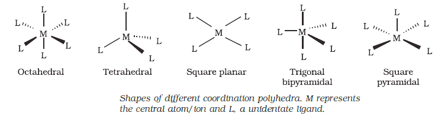
Oxidation number of central atom:
The oxidation number of the central atom in a complex is defined
as the charge it would carry if all the ligands are removed along
with the electron pairs that are shared with the central atom. The
oxidation number is represented by a Roman numeral in parenthesis
following the name of the coordination entity. For example, oxidation
number of copper in [Cu(CN)4]3- is +1 and it is written as Cu(I).
Homoleptic and heteroleptic complexes:
Complexes in which a metal is bound to only one kind of donor
groups, e.g., [Co(NH3)6]3+, are known as homoleptic. Complexes in
which a metal is bound to more than one kind of donor groups,
e.g., [Co(NH3)4Cl2]+, are known as heteroleptic.
Nomenclature of Coordination Compounds:
Nomenclature is important in Coordination Chemistry because of the
need to have an unambiguous method of describing formulas and
writing systematic names, particularly when dealing with isomers. The
formulas and names adopted for coordination entities are based on the
recommendations of the International Union of Pure and Applied
Chemistry (IUPAC).
Formulas of Mononuclear Coordination Entities:
The formula of a compound is a shorthand tool used to provide basic
information about the constitution of the compound in a concise and
convenient manner. Mononuclear coordination entities contain a single
central metal atom. The following rules are applied while writing the formulas:
(i) The central atom is listed first.
(ii) The ligands are then listed in alphabetical order. The placement of
a ligand in the list does not depend on its charge.
(iii) Polydentate ligands are also listed alphabetically. In case of
abbreviated ligand, the first letter of the abbreviation is used to
determine the position of the ligand in the alphabetical order.
(iv) The formula for the entire coordination entity, whether charged or
not, is enclosed in square brackets. When ligands are polyatomic,
their formulas are enclosed in parentheses. Ligand abbreviations
are also enclosed in parentheses.
(v) There should be no space between the ligands and the metal
within a coordination sphere.
(vi) When the formula of a charged coordination entity is to be written
without that of the counter ion, the charge is indicated outside the
square brackets as a right superscript with the number before the
sign. For example, [Co(CN)6]3-, [Cr(H2O)6]3+, etc.
(vii) The charge of the cation(s) is balanced by the charge of the anion(s).
Naming of Mononuclear Coordination Compounds:
The names of coordination compounds are derived by following the
principles of additive nomenclature. Thus, the groups that surround the
central atom must be identified in the name. They are listed as prefixes
to the name of the central atom along with any appropriate multipliers.
The following rules are used when naming coordination compounds:
(i) The cation is named first in both positively and negatively charged
coordination entities.
(ii) The ligands are named in an alphabetical order before the name of the
central atom/ion. (This procedure is reversed from writing formula).
(iii) Names of the anionic ligands end in –o, those of neutral and cationic
ligands are the same except aqua for H2O, ammine for NH3, carbonyl
for CO and nitrosyl for NO. While writing the formula of coordination
entity, these are enclosed in brackets ( ).
(iv) Prefixes mono, di, tri, etc., are used to indicate the number of the
individual ligands in the coordination entity. When the names of
the ligands include a numerical prefix, then the terms, bis, tris,
tetrakis are used, the ligand to which they refer being placed in
parentheses. For example, [NiCl2(PPh3)2] is named as
dichloridobis(triphenylphosphine)nickel(II).
(v) Oxidation state of the metal in cation, anion or neutral coordination
entity is indicated by Roman numeral in parenthesis.
(vi) If the complex ion is a cation, the metal is named same as the
element. For example, Co in a complex cation is called cobalt and
Pt is called platinum. If the complex ion is an anion, the name of
the metal ends with the suffix – ate. For example, Co in a complex
anion, [Co(SCN)₄]²⁻ is called cobaltate. For some metals, the Latin
names are used in the complex anions, e.g., ferrate for Fe.
(vii) The neutral complex molecule is named similar to that of the
complex cation.
The following examples illustrate the nomenclature for coordination
compounds.
1. [Cr(NH3)3(H2O)3]Cl3 is named as:
triamminetriaquachromium(III) chloride
Explanation: The complex ion is inside the square bracket, which is
a cation. The amine ligands are named before the aqua ligands
according to alphabetical order. Since there are three chloride ions in
the compound, the charge on the complex ion must be +3 (since the
compound is electrically neutral). From the charge on the complex
ion and the charge on the ligands, we can calculate the oxidation
number of the metal. In this example, all the ligands are neutral
molecules. Therefore, the oxidation number of chromium must be
the same as the charge of the complex ion, +3.
2. [Co(H2NCH2CH2NH2)3]2(SO4)3 is named as:
tris(ethane-1,2–diamine)cobalt(III) sulphate
Explanation: The sulphate is the counter anion in this molecule.
Since it takes 3 sulphates to bond with two complex cations, the
charge on each complex cation must be +3. Further, ethane-1,2–
diamine is a neutral molecule, so the oxidation number of cobalt
in the complex ion must be +3. Remember that you never have to
indicate the number of cations and anions in the name of an
ionic compound.
3. [Ag(NH3)2][Ag(CN)2] is named as:
diamminesilver(I) dicyanidoargentate(I)
Isomerism in Coordination Compounds: Isomers are two or more compounds that have the same chemical formula but a different arrangement of atoms. Because of the different arrangement of atoms, they differ in one or more physical or chemical properties. Two principal types of isomerism are known among coordination compounds. Each of which can be further subdivided
(a) Stereoisomerism (i) Geometrical isomerism (ii) Optical isomerism (b) Structural isomerism (i) Linkage isomerism (ii) Coordination isomerism (iii) Ionisation isomerism (iv) Solvate isomerismStereoisomers have the same chemical formula and chemical bonds but they have different spatial arrangement. Structural isomers have different bonds. A detailed account of these isomers are given below.
Geometric Isomerism:
This type of isomerism arises in heteroleptic
complexes due to different possible geometric
arrangements of the ligands. Important examples of
this behaviour are found with coordination numbers
4 and 6. In a square planar complex of formula
[MX2L2] (X and L are unidentate), the two ligands X
may be arranged adjacent to each other in a cis
isomer, or opposite to each other in a trans isomer.
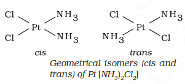
Such isomerism is not possible for a tetrahedral
geometry but similar behaviour is possible in
octahedral complexes of formula [MX2L4] in
which the two ligands X may be oriented cis
or trans to each other
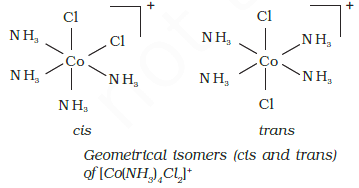
This type of isomerism also arises when didentate ligands
L-L [e.g., NH2CH2CH2NH2(en)] are present in complexes of formula
[MX2(L–L)2].
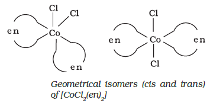
Another type of geometrical isomerism occurs in octahedral
coordination entities of the type [Ma3b3] like [Co(NH3)3(NO2)3].
If three donor atoms of the same ligands occupy adjacent positions
at the corners of an octahedral face, we have the facial(fac)
isomer. When the positions are around the meridian of the
octahedron, we get the meridional(mer) isomer.
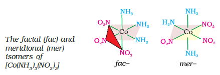
Optical Isomerism:
Optical isomers are mirror images that cannot be superimposed on one
another. These are called as enantiomers. The molecules or ions
that cannot be superimposed are called chiral. The two forms are called
dextro (d) and laevo (l) depending upon the direction they rotate the
plane of polarised light in a polarimeter (d rotates to the right, l to
the left). Optical isomerism is common in octahedral complexes involving
didentate ligands
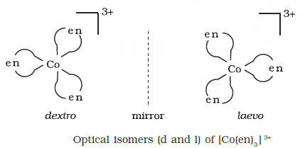
In a coordination entity of the type [PtCl2(en)2]2+, only the
cis-isomer shows optical activity.
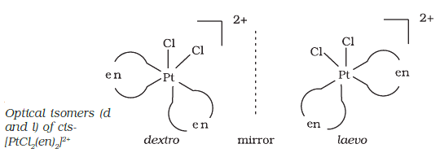
Linkage Isomerism:
Linkage isomerism arises in a coordination compound containing
ambidentate ligand. A simple example is provided by complexes
containing the thiocyanate ligand, NCS-, which may bind through the
nitrogen to give M–NCS or through sulphur to give M–SCN. Jørgensen
discovered such behaviour in the complex [Co(NH3)5(NO2)]Cl2, which is
obtained as the red form, in which the nitrite ligand is bound through
oxygen (–ONO), and as the yellow form, in which the nitrite ligand is
bound through nitrogen (–NO2).
Coordination Isomerism:
This type of isomerism arises from the interchange of ligands between
cationic and anionic entities of different metal ions present in a complex.
An example is provided by [Co(NH3)6][Cr(CN)6],
in which the NH3 ligands
are bound to Co3+ and the CN- ligands to Cr3+. In its coordination
isomer [Cr(NH3)6][Co(CN)6],
the NH3 ligands are bound to Cr3+ and the
CN- ligands to Co3+.
Ionisation Isomerism:
This form of isomerism arises when the counter ion in a complex salt
is itself a potential ligand and can displace a ligand which can then
become the counter ion. An example is provided by the ionisation
isomers [Co(NH3)5(SO4)]Br and
[Co(NH3)5Br]SO4.
Solvate Isomerism:
This form of isomerism is known as ‘hydrate isomerism’ in case where
water is involved as a solvent. This is similar to ionisation isomerism.
Solvate isomers differ by whether or not a solvent molecule is directly
bonded to the metal ion or merely present as free solvent molecules
in the crystal lattice. An example is provided by the aqua
complex [Cr(H2O)6]Cl3 (violet) and
its solvate isomer [Cr(H2O)5Cl]Cl2.H2O
(grey-green).
Bonding in Coordination Compounds:
Werner was the first to describe the bonding features in coordination compounds. But his theory could not answer basic questions like: (i) Why only certain elements possess the remarkable property of forming coordination compounds? (ii) Why the bonds in coordination compounds have directional properties? (iii) Why coordination compounds have characteristic magnetic and optical properties? Many approaches have been put forth to explain the nature of bonding in coordination compounds viz. Valence Bond Theory (VBT), Crystal Field Theory (CFT), Ligand Field Theory (LFT) and Molecular Orbital Theory (MOT). We shall focus our attention on elementary treatment of the application of VBT and CFT to coordination compounds.
Valence Bond Theory:
According to this theory, the metal atom or ion under the influence of
ligands can use its (n-1)d, ns, np or ns, np, nd orbitals for hybridisation
to yield a set of equivalent orbitals of definite geometry such as octahedral,
tetrahedral, square planar and so on. These hybridised orbitals
are allowed to overlap with ligand orbitals that can donate electron pairs
for bonding. This is illustrated by the following examples.
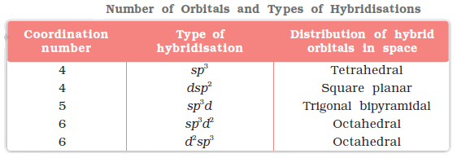
It is usually possible to predict the geometry of a complex from
the knowledge of its magnetic behaviour on the basis of the valence
bond theory.In the diamagnetic octahedral complex, [Co(NH3)6]3+, the cobalt ion
is in +3 oxidation state and has the electronic configuration 3d6.
The hybridisation scheme is as shown in diagram.
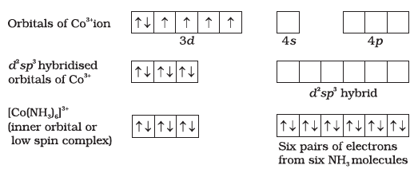
Six pairs of electrons, one from each NH3 molecule, occupy the six
hybrid orbitals. Thus, the complex has octahedral geometry and is
diamagnetic because of the absence of unpaired electron. In the formation
of this complex, since the inner d orbital (3d) is used in hybridisation,
the complex, [Co(NH3)6]3+ is called an inner orbital or low spin or spin
paired complex. The paramagnetic octahedral complex, [CoF6]3- uses
outer orbital (4d) in hybridisation (sp3d2). It is thus called outer orbital
or high spin or spin free complex. Thus:
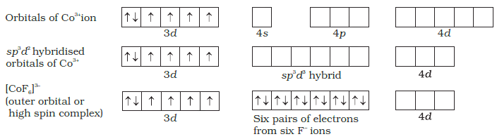
In tetrahedral complexes
one s and three p orbitals
are hybridised to form four
equivalent orbitals oriented
tetrahedrally. This is illustrated
below for [NiCl4]2-.
Here nickel is in +2
oxidation state and the ion
has the electronic
configuration 3d8. The
hybridisation scheme is as
shown in diagram.
Each Cl- ion donates a pair of electrons. The compound is
paramagnetic since it contains two unpaired electrons.
Similarly,[Ni(CO)4] has tetrahedral geometry but is diamagnetic since nickel is in
zero oxidation state and contains no unpaired electron.
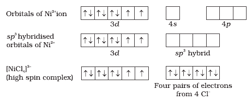
In the square planar complexes, the hybridisation involved is dsp2.
An example is [Ni(CN)4]2-. Here nickel is in +2 oxidation state and has
the electronic configuration 3d8. The hybridisation scheme is as shown
in diagram:
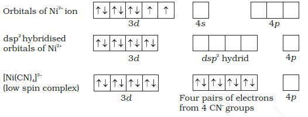
Each of the hybridised orbitals receives a pair of electrons from a
cyanide ion. The compound is diamagnetic as evident from the absence
of unpaired electron.
It is important to note that the hybrid orbitals do not actually exist.
In fact, hybridisation is a mathematical manipulation of wave equation
for the atomic orbitals involved.
Magnetic Properties of Coordination Compounds:
The magnetic moment of coordination compounds can be measured
by the magnetic susceptibility experiments. The results can be used to
obtain information about the number of unpaired electrons
and hence structures adopted by metal complexes.
A critical study of the magnetic data of coordination compounds of
metals of the first transition series reveals some complications. For
metal ions with upto three electrons in the d orbitals, like Ti3+(d1); V3+
(d2); Cr3+ (d3); two vacant d orbitals are available for octahedral
hybridisation with 4s and 4p orbitals. The magnetic behaviour of these
free ions and their coordination entities is similar. When more than
three 3d electrons are present, the required pair of 3d orbitals for
octahedral hybridisation is not directly available (as a consequence of
Hund’s rule). Thus, for d4 (Cr2+, Mn3+), d5 (Mn2+, Fe3+), d6 (Fe2+, Co3+)
cases, a vacant pair of d orbitals results only by pairing of 3d electrons
which leaves two, one and zero unpaired electrons, respectively.
The magnetic data agree with maximum spin pairing in many cases,
especially with coordination compounds containing d6 ions. However,
with species containing d4 and d5 ions there are complications.
[Mn(CN)6]3- has magnetic moment of two unpaired electrons while [MnCl6]3- has a
paramagnetic moment of four unpaired electrons. [Fe(CN)6]3- has magnetic
moment of a single unpaired electron while [FeF6]3- has a paramagnetic
moment of five unpaired electrons. [CoF6]3- is paramagnetic with four
unpaired electrons while [Co(C2O4)3]3- is diamagnetic. This apparent
anomaly is explained by valence bond theory in terms of formation of
inner orbital and outer orbital coordination entities. [Mn(CN)6]3-, [Fe(CN)6]3-
and [Co(C2O4)3]3- are inner orbital complexes involving d2sp3 hybridisation,
the former two complexes are paramagnetic and the latter diamagnetic.
On the other hand, [MnCl6]3-, [FeF6]3- and [CoF6]3- are outer orbital
complexes involving sp3d2
hybridisation and are paramagnetic
corresponding to four, five and four unpaired electrons.
Limitations of Valence Bond Theory:
While the VB theory, to a larger extent, explains the formation, structures and magnetic behaviour of coordination compounds, it suffers from the following shortcomings: (i) It involves a number of assumptions. (ii) It does not give quantitative interpretation of magnetic data. (iii) It does not explain the colour exhibited by coordination compounds. (iv) It does not give a quantitative interpretation of the thermodynamic or kinetic stabilities of coordination compounds. (v) It does not make exact predictions regarding the tetrahedral and square planar structures of 4-coordinate complexes. (vi) It does not distinguish between weak and strong ligands.
Crystal Field Theory:
The crystal field theory (CFT) is an electrostatic model which considers
the metal-ligand bond to be ionic arising purely from electrostatic
interactions between the metal ion and the ligand. Ligands are treated
as point charges in case of anions or point dipoles in case of neutral
molecules. The five d orbitals in an isolated gaseous metal atom/ion
have same energy, i.e., they are degenerate. This degeneracy is
maintained if a spherically symmetrical field of negative charges
surrounds the metal atom/ion. However, when this negative field is
due to ligands (either anions or the negative ends of dipolar molecules
like NH3 and H2O) in a complex, it becomes asymmetrical and the
degeneracy of the d orbitals is lifted. It results in splitting of the d
orbitals. The pattern of splitting depends upon the nature of the crystal
field. Let us explain this splitting in different crystal fields.
(a) Crystal field splitting in octahedral coordination entities
In an octahedral coordination entity with six ligands surrounding
the metal atom/ion, there will be repulsion between the electrons in
metal d orbitals and the electrons (or negative charges) of the ligands.
Such a repulsion is more when the metal d orbital is directed towards
the ligand than when it is away from the ligand. Thus, the dx2-y2
and dz2 orbitals which point towards the axes along the direction of
the ligand will experience more repulsion and will be raised in
energy; and the dxy, dyz and dxz orbitals which are directed between
the axes will be lowered in energy relative to the average energy in
the spherical crystal field. Thus, the degeneracy of the d orbitals
has been removed due to ligand electron-metal electron repulsions
in the octahedral complex to yield three orbitals of lower energy, t2g
set and two orbitals of higher energy, eg set. This splitting of the
degenerate levels due to the presence of ligands in a
definite geometry is termed as crystal field splitting and the
energy separation is denoted by Δo (the subscript o is for
octahedral). Thus, the energy of the two eg orbitals
will increase by (3/5)Δo and that of the three t2g will decrease by (2/5)Δo.
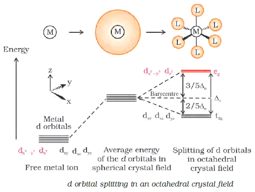
The crystal field splitting,
Do, depends upon the field
produced by the ligand and
charge on the metal ion. Some
ligands are able to produce
strong fields in which case, the
splitting will be large whereas
others produce weak fields
and consequently result in
small splitting of d orbitals.
In general, ligands can be arranged in a series in the order of increasing
field strength as given below:
I- < Br- < SCN- < Cl- < S2- < F- < OH-
< C2O42- < H2O < NCS-< EDTA4- < NH3 < en < CN- < CO
Such a series is termed as spectrochemical series. It is an
experimentally determined series based on the absorption of light
by complexes with different ligands. Let us assign electrons in the d
orbitals of metal ion in octahedral coordination entities. Obviously,
the single d electron occupies one of the lower energy t2g orbitals. In
d2 and d3 coordination entities, the d electrons occupy the t2g orbitals
singly in accordance with the Hund’s rule. For d4 ions, two possible
patterns of electron distribution arise:
(i) the fourth electron could either enter the t2g level and pair with an existing electron, or
(ii) it could avoid paying the price of the pairing energy by occupying the
eg level.
Which of these possibilities occurs, depends on the relative
magnitude of the crystal field splitting, Δo and the pairing energy, P
(P represents the energy required for electron pairing in a single
orbital). The two options are:
(i) If Δo < P, the fourth electron enters one of the eg orbitals giving the configuration t2g3eg1 .
Ligands for which Δo < P are known as weak field ligands and form high spin complexes.
(ii) If Δo > P, it becomes more energetically favourable for the fourth electron to occupy a t2g orbital with configuration t2g4eg0.
Ligands which produce this effect are known as strong field ligands and form low spin complexes.
Calculations show that d4 to d7 coordination entities are more stable for strong field as compared to weak field cases.
(b) Crystal field splitting in tetrahedral coordination entities:
In tetrahedral coordination entity formation,
the d orbital splitting is inverted
and is smaller as compared to the octahedral
field splitting. For the same metal, the same
ligands and metal-ligand distances, it can
be shown that Δt = (4/9) Δ0. Consequently,
the orbital splitting energies are not
sufficiently large for forcing pairing and,
therefore, low spin configurations are rarely
observed. The ‘g’ subscript is used for the
octahedral and square planar complexes
which have centre of symmetry. Since
tetrahedral complexes lack symmetry, ‘g’
subscript is not used with energy levels.
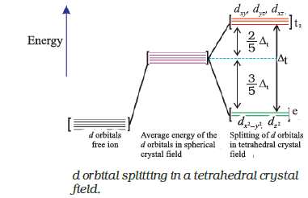
Colour in Coordination Compounds:
One of the most distinctive
properties of transition metal complexes is their wide range of colours.
This means that some of the visible spectrum is being removed from
white light as it passes through the sample, so the light that emerges
is no longer white. The colour of the complex is complementary to
that which is absorbed. The complementary colour is the colour
generated from the wavelength left over; if green light is absorbed by
the complex, it appears red. Following table gives the relationship of the
different wavelength absorbed and the colour observed.
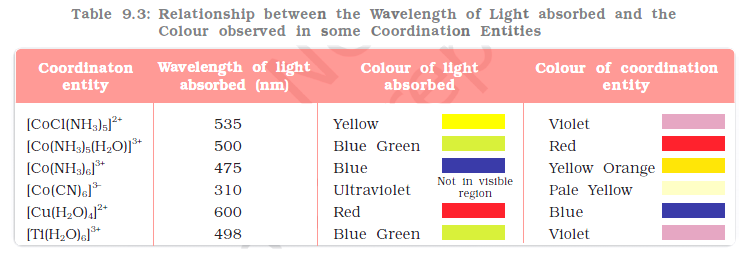
The colour in the coordination compounds can be readily explained
in terms of the crystal field theory. Consider, for example, the complex
[Ti(H2O)6]3+, which is violet in colour. This is an octahedral complex
where the single electron (Ti3+ is a 3d1 system) in the metal d orbital is
in the t2g level in the ground state of the complex. The next higher state
available for the electron is the empty eg level. If light corresponding to
the energy of blue-green region is absorbed by the complex, it would
excite the electron from t2g level to the eg level
(t2g1eg0 → t2g0eg1).Consequently, the complex appears violet in colour . The
crystal field theory attributes the colour of the coordination compounds
to d-d transition of the electron.
It is important to note that
in the absence of ligand,
crystal field splitting does
not occur and hence the
substance is colourless. For
example, removal of water
from [Ti(H2O)6]Cl3 on heating
renders it colourless.
Similarly, anhydrous CuSO4
is white, but CuSO4.5H2O is
blue in colour. The influence
of the ligand on the colour
of a complex may be illustrated by considering the [Ni(H2O)6]2+ complex,
which forms when nickel(II) chloride is dissolved in water. If the
didentate ligand, ethane-1,2-diamine(en) is progressively added in the
molar ratios en:Ni, 1:1, 2:1, 3:1, the following series of reactions and
their associated colour changes occur:
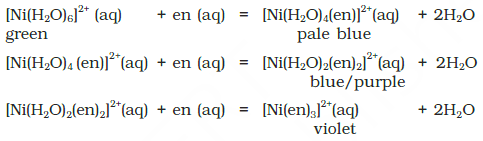
Limitations of CRystal Field Theory:
The crystal field model is successful in explaining the formation,
structures, colour and magnetic properties of coordination compounds
to a large extent. However, from the assumptions that the ligands are
point charges, it follows that anionic ligands should exert the greatest
splitting effect. The anionic ligands actually are found at the low end
of the spectrochemical series. Further, it does not take into account
the covalent character of bonding between the ligand and the central
atom. These are some of the weaknesses of CFT, which are explained
by ligand field theory (LFT) and molecular orbital theory which are
beyond the scope of the present study.
Bonding in Metal Carbonyls:
The homoleptic carbonyls (compounds containing carbonyl ligands
only) are formed by most of the transition metals. These carbonyls
have simple, well defined structures. Tetracarbonylnickel(0) is
tetrahedral, pentacarbonyliron(0) is trigonalbipyramidal while
hexacarbonyl chromium(0) is octahedral.
Decacarbonyldimanganese(0) is made up of two square pyramidal
Mn(CO)5 units joined by a Mn – Mn bond. Octacarbonyldicobalt(0)
has a
Co – Co bond bridged by two CO groups.
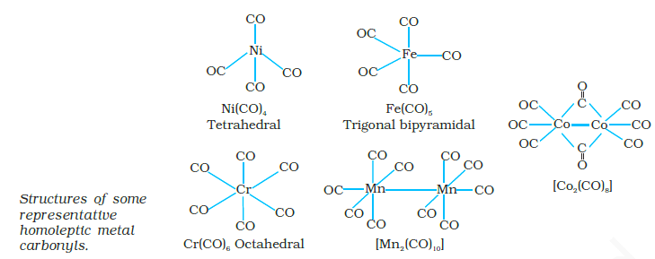
The metal-carbon bond in metal carbonyls
possess both s and p character. The M–C s bond
is formed by the donation of lone pair of electrons
on the carbonyl carbon into a vacant orbital of
the metal. The M–C p bond is formed by the
donation of a pair of electrons from a filled d orbital
of metal into the vacant antibonding p* orbital of
carbon monoxide. The metal to ligand bonding
creates a synergic effect which strengthens the
bond between CO and the metal.
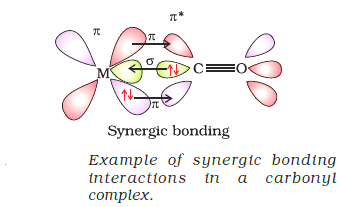
Importance and applications of Coordination Compounds:
The coordination compounds are of great importance. These compounds
are widely present in the mineral, plant and animal worlds and are
known to play many important functions in the area of analytical
chemistry, metallurgy, biological systems, industry and medicine. These
are described below:
• Coordination compounds find use in many qualitative and
quantitative chemical analysis. The familiar colour reactions given
by metal ions with a number of ligands (especially chelating ligands),
as a result of formation of coordination entities, form the basis for
their detection and estimation by classical and instrumental methods
of analysis. Examples of such reagents include EDTA, DMG
(dimethylglyoxime), a–nitroso–b–naphthol, cupron, etc.
• Hardness of water is estimated by simple titration with Na2EDTA.
The Ca2+ and Mg2+ ions form stable complexes with EDTA. The
selective estimation of these ions can be done due to difference in
the stability constants of calcium and magnesium complexes.
• Some important extraction processes of metals, like those of silver and
gold, make use of complex formation. Gold, for example, combines with
cyanide in the presence of oxygen and water to form the coordination
entity [Au(CN)2]- in aqueous solution. Gold can be separated in metallic
form from this solution by the addition of zinc .
• Similarly, purification of metals can be achieved through formation
and subsequent decomposition of their coordination compounds.
For example, impure nickel is converted to [Ni(CO)4], which is
decomposed to yield pure nickel.
• Coordination compounds are of great importance in biological
systems. The pigment responsible for photosynthesis, chlorophyll,
is a coordination compound of magnesium. Haemoglobin, the red
pigment of blood which acts as oxygen carrier is a coordination
compound of iron. Vitamin B12, cyanocobalamine, the anti–
pernicious anaemia factor, is a coordination compound of cobalt.
Among the other compounds of biological importance with
coordinated metal ions are the enzymes like, carboxypeptidase A
and carbonic anhydrase (catalysts of biological systems).
• Coordination compounds are used as catalysts for many industrial
processes. Examples include rhodium complex, [(Ph3P)3RhCl], a
Wilkinson catalyst, is used for the hydrogenation of alkenes.
• Articles can be electroplated with silver and gold much more
smoothly and evenly from solutions of the complexes, [Ag(CN)2]-
and [Au(CN)2]- than from a solution of simple metal ions.
• In black and white photography, the developed film is fixed by
washing with hypo solution which dissolves the undecomposed
AgBr to form a complex ion, [Ag(S2O3)2]3-.
• There is growing interest in the use of chelate therapy in medicinal
chemistry. An example is the treatment of problems caused by the
presence of metals in toxic proportions in plant/animal systems.
Thus, excess of copper and iron are removed by the chelating ligands
D–penicillamine and desferrioxime B via the formation of coordination
compounds. EDTA is used in the treatment of lead poisoning. Some
coordination compounds of platinum effectively inhibit the growth
of tumours. Examples are: cis–platin and related compounds.